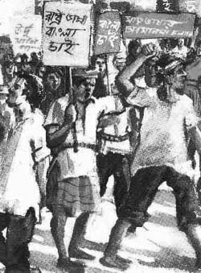

Ekush is Bangla for 21, and Ekushey means 21st. In Bangladesh, 'Ekushey' is synonymous with 'Ekushey February', the day when Bangladesh celebrates its Bangla Language Movement and honors those who sacrificed their lives in its name on 21st February, 1952, simultaneously sewing the seeds of the independence movement which was to free Bangladesh from its Pakistani rulers.
In 1947, the impetus for independence that had been building for many years culminated in the end the British Rule over Indian Sub-Continent, ending over two centuries of European rule. In the process, the land was divided along religious lines, forming Hindu India, and Muslim Pakistan. Pakistan, in turn, had two territories: West Pakistan, and separated by a thousand miles of Indian territory, East Pakistan.
From the beginning, there were significant problems. Although the majority of Pakistan's inhabitants lived in the eastern province, representation and funding was not fairly distributed. Culturally too, there were rifts. Apart from a common religion, Islam, those in the west and east had nothing in common Their languages and cultural heritage were distinct - the majority in East Pakistan spoke Bangla (embraced by roughly 55% of Pakistanis at the time), and had strong cultural ties with the West Bengalis of India. West Pakistanis, on the other hand, spoke a number of regional dialects; the official language Urdu, a relatively new dialect formed from a fusion of Hindi and Parsi, was native to only 6% of Pakistanis; and West Pakistanis identified closely with the Arab cultures of the Middle East.
In 1948, after the government of the new Pakistan was formed under Mohammad Ali Jinnah, Urdu was made the soul state language. Efforts were made to have it universally spoken, an order that was insensitive to the East Pakistanis who had tenaciously maintained their right to speak and write in Bangla in spite of hundreds of years of foreign invasion. The students of Dhaka University spontaneously opposed, and the Language Movement was born. Students, politicians and the intelligentsia banded together in a move to implement Bangla as a second official language, alongside Urdu, and the state language of East Pakistan. Jinnah, and his successor Najimuddin were vehemently opposed to allowing this. As a result, the movement continued to gain momentum over the years, until its climax in 1952.
Early in February 1952, student leaders decided that 21st February would be celebrated as State Language Day. Peaceful strikes and processions were scheduled across the state. Upon hearing of the plans, the ruling government cited Section 144 prohibiting large public gatherings. The students violated the code, and a peaceful procession was launched on the morning of the 21. As soon as the procession left the premises of the Dhaka University campus and spilled into main streets, police opened fire, and consequently, unarmed students died and many were injured.
The already-disenchanted Bengalis were alarmed and angered by this action, and became increasingly agitated. Seeing this, the government made the gesture of instating Bangla as the state language of East Pakistan and a second state language with Urdu, in April of that year. The gesture came far too late, for the agitation for recognition was sweeping the vast state. It slowly morphed into a desire for self governance, recognition, respect that, after nineteen years of strife and tension, eventually evolved into a movement for independence, culminating in the nine month long War of Independence that gave birth to Bangladesh in 1971.
In the world's history, no other nation has had to struggle so much, shed so much blood, to be able to hang onto their right to speak their Mother Tongue.
In 1999, in recognition of the Bangla Language movement, UNESCO adopted a resolution declaring 21st February as the World Mother Language day. The day has been celebrated with due respect to the martyrs of the movement at all UN nations since year 2000.